ELDOVANT Official Website
Il sito ufficiale di ELDOVANT, casa indipendente di film, cortometraggi, serie e musica originali: progettato e realizzato da MANDAVEL, bilingue e costruito come un’apertura cinematografica.
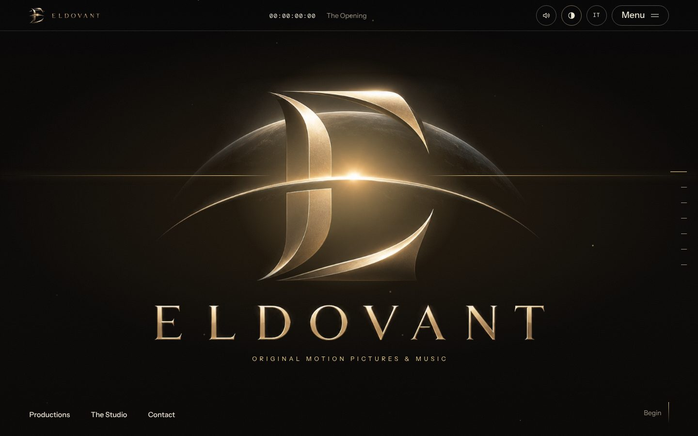
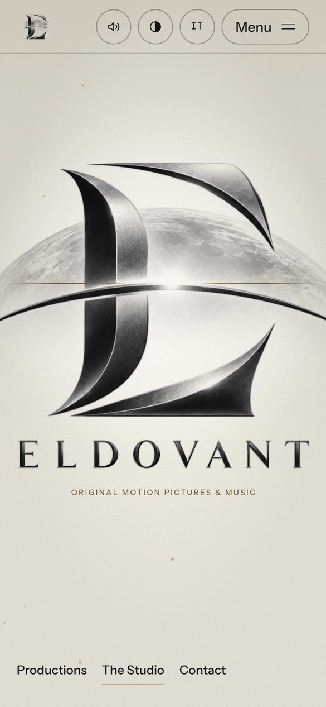
ELDOVANT, immagini e suono come un’unica opera.
ELDOVANT si presenta come una casa di produzione indipendente per film originali, cortometraggi, serie e musica. Il sito doveva dare a questo marchio una sede ufficiale sobria e cinematografica, che mostri ogni titolo per quello che è, senza promettere di più.
Cosa è stato progettato e costruito.
Le caratteristiche qui sotto sono quelle effettivamente presenti nel sito.
Un’ouverture con timecode
La home si apre con il marchio, un timecode nella barra superiore e un invito a iniziare; l’apertura si può saltare.
Una home a capitoli
Apertura, produzione in evidenza, film e serie, lo studio, la visione, note di produzione e contatti, raggiungibili anche dal menu «In questa pagina».
Pagina dedicata a ogni titolo
Locandina, formato, stato, data di annuncio e un percorso di produzione che sposta la luce sulla fase in cui si trova il titolo.
Annuncio in primo piano
Il video YouTube si apre in una finestra sovrapposta e sceglie da solo il formato, verticale 9:16 oppure orizzontale 16:9.
EN/IT, chiaro e scuro
Commutatore di lingua e di tema nella barra, con scelta ricordata nel browser. Il suono è facoltativo e parte solo su richiesta.
Richieste instradate
Il modulo indirizza collaborazioni, licenze, musica e stampa agli indirizzi ELDOVANT competenti, aprendo il programma di posta.
Un solo file di contenuti
Titoli, stati e contatti si modificano in un unico file; uno script genera pagine titolo, anteprime social e sitemap.
Pronto per essere trovato
Pagine statiche con titoli, canonical, hreflang EN/IT, Open Graph e dati strutturati, e un controllo del nome del sito prima di ogni pubblicazione.
Attenzione all’uso reale
Collegamento «salta al contenuto», etichette sui comandi e rispetto della preferenza di movimento ridotto.
Il sito, su desktop e su mobile.
Schermate del sito ELDOVANT. Per esplorarlo dal vivo, usa il pulsante «Visita eldovant.com».
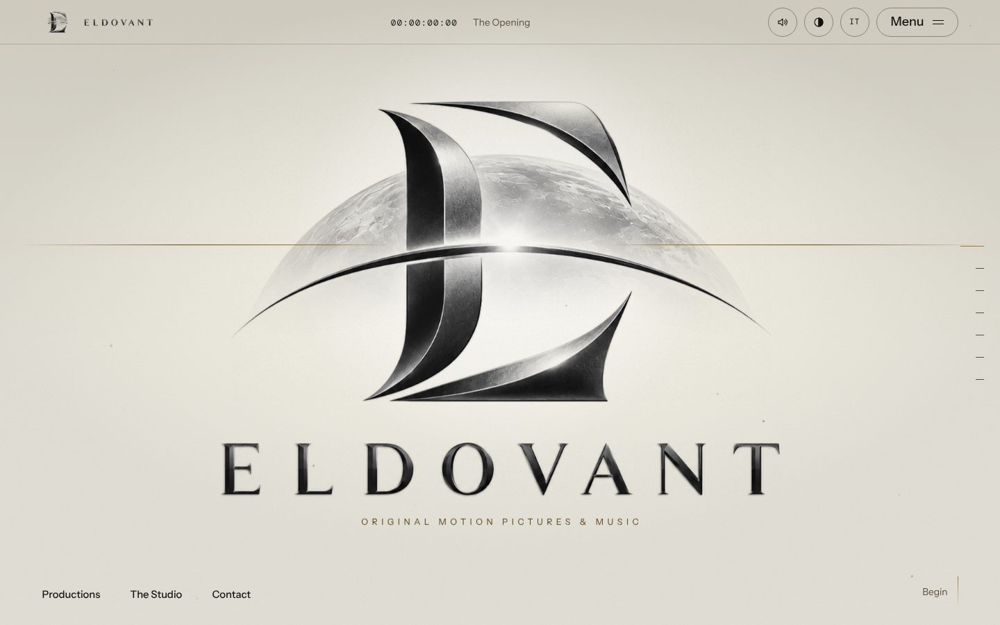
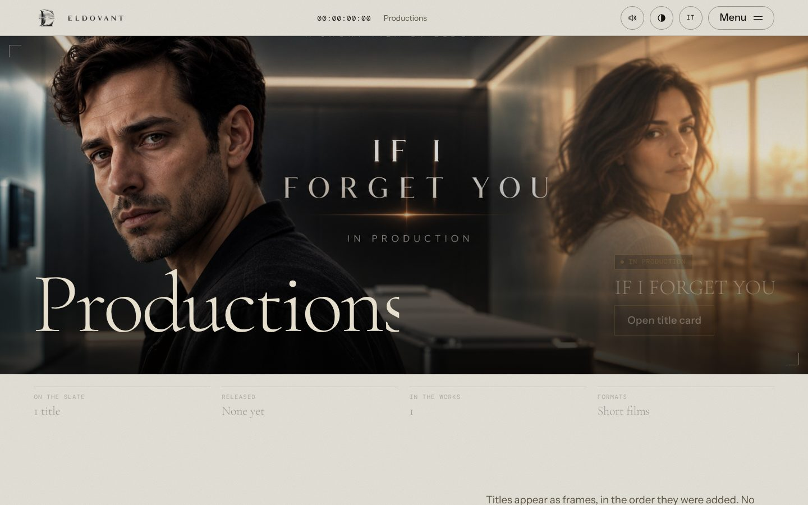
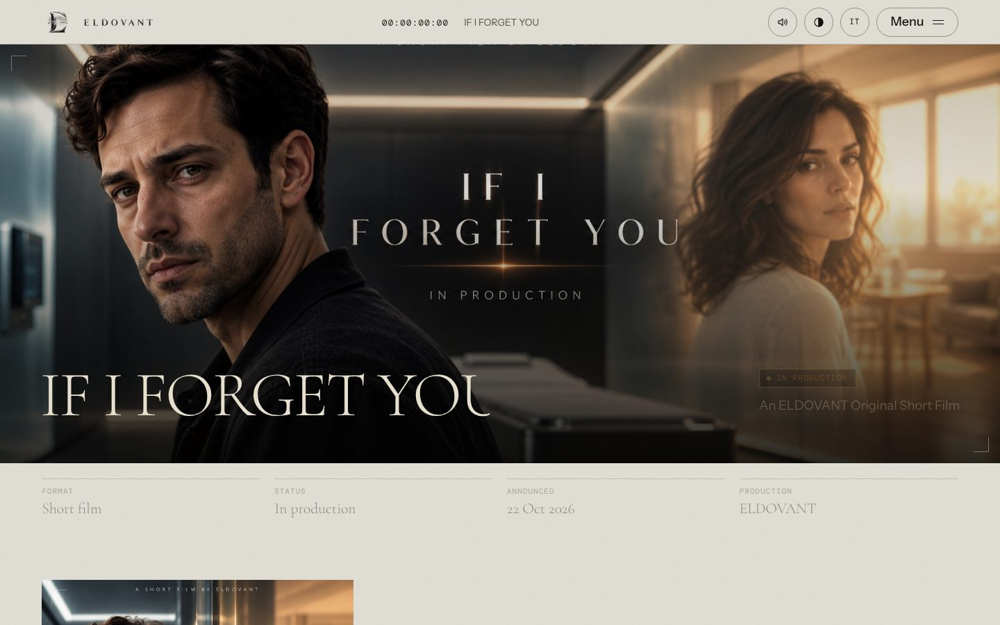
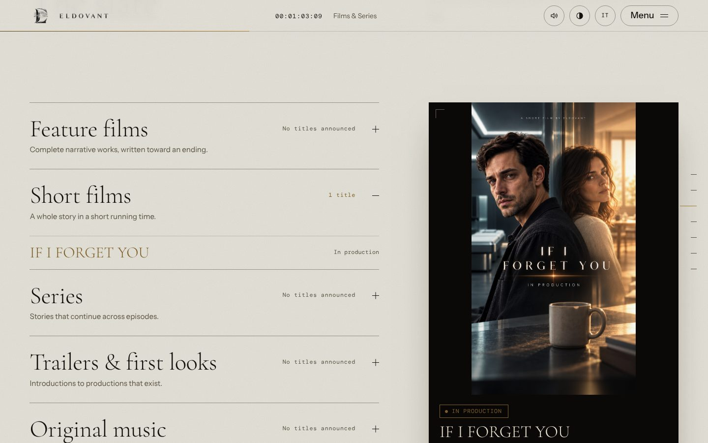
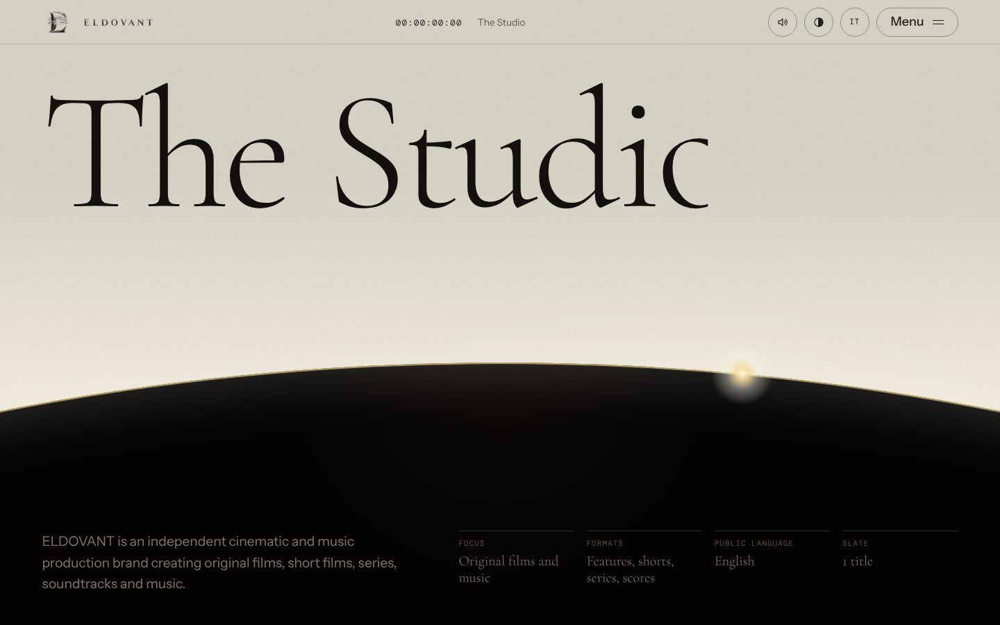
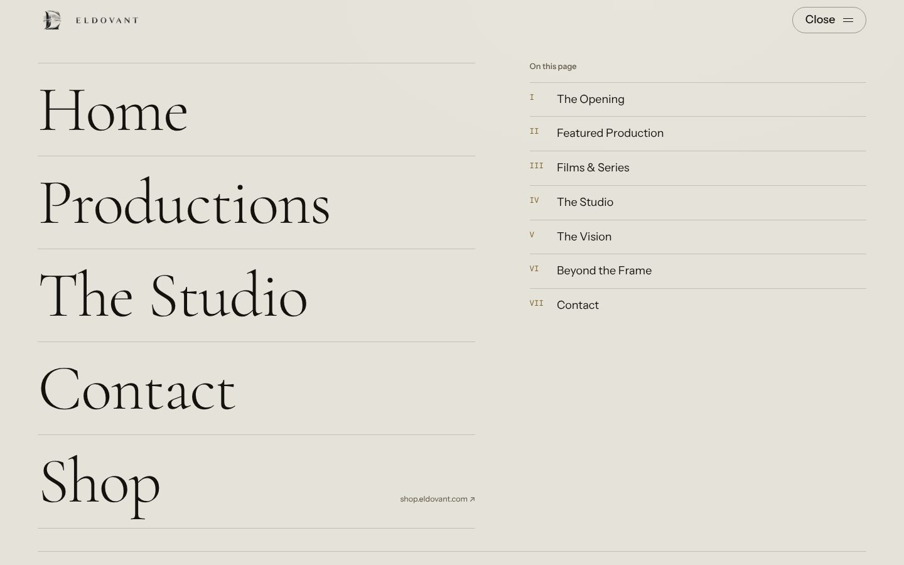
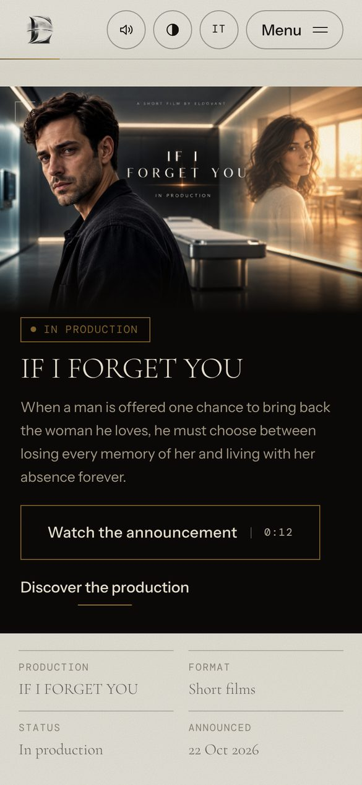
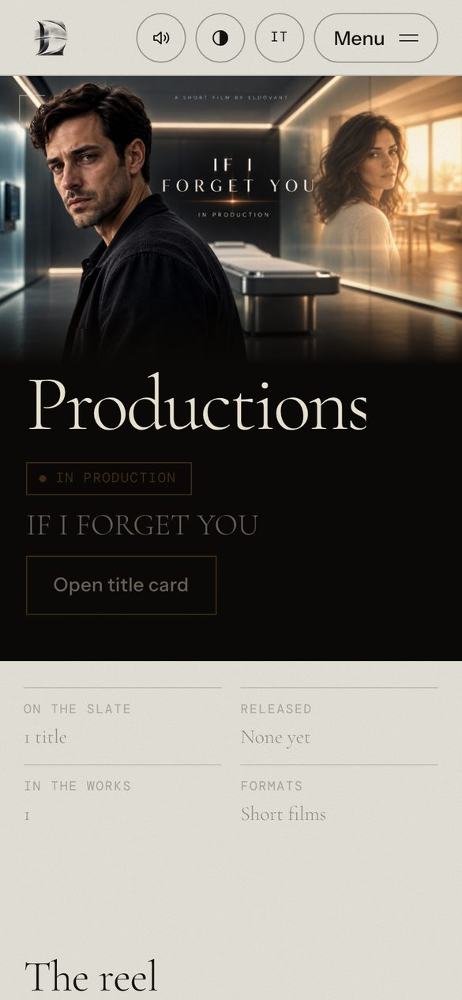
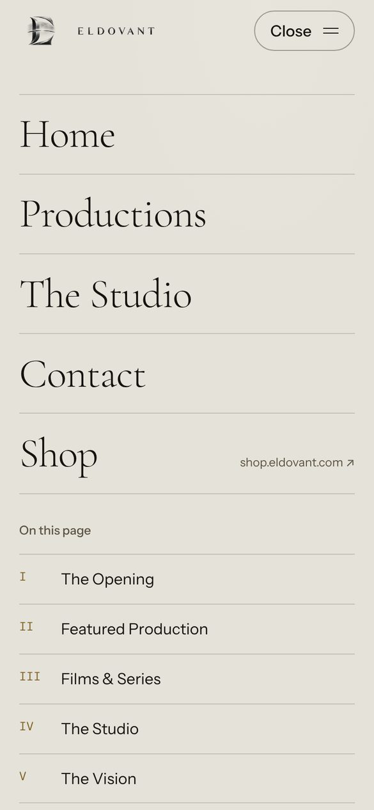
Carta calda, inchiostro e oro.
Identità e tipografia del sito, ricavate dal suo codice: una palette neutra e calda con un solo accento, l’oro, e tre caratteri con ruoli distinti. Tutti i caratteri sono incorporati nelle pagine.
Struttura e tecnologia.
- Autore
- MANDAVEL, progettazione e realizzazione
- Brand
- ELDOVANT, Original Motion Pictures & Music
- Indirizzo
- www.eldovant.com
- Pagine
- Home, Productions, pagina titolo, The Studio, Contact, Privacy, Cookie e Termini di servizio, ciascuna in inglese e italiano.
- Tecnologia
- Sito statico in HTML, CSS e JavaScript, con contenuti da un unico file dati e uno script di generazione eseguito da GitHub Actions; pubblicato su GitHub Pages.
- Esperienza
- Apertura con timecode, tema chiaro e scuro, commutatore EN/IT, suono facoltativo, menu a schermo intero, annuncio video in sovrimpressione.
- Dispositivi
- Layout dedicati per desktop e mobile.
Esplora ELDOVANT dal vivo.
Il sito è online: apri eldovant.com per sfogliarlo, cambiare lingua e tema e vedere come risponde su ogni schermo.